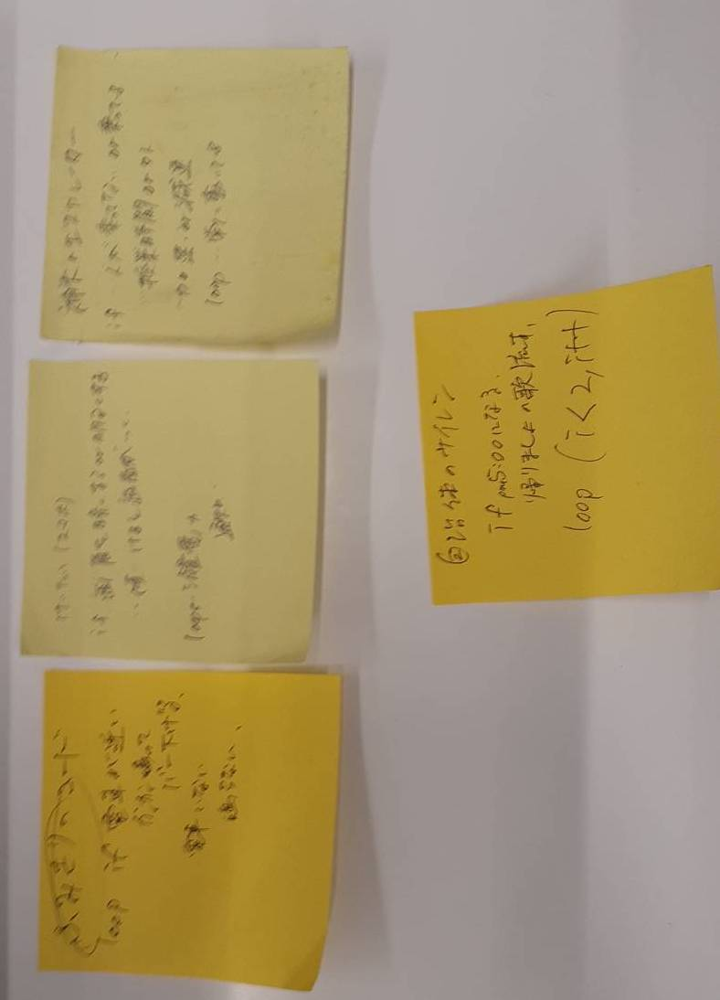

第1回の課題 arduinoみたくifとloopで考える
- プログラムでモノを動かしているものにはどんなものがあるか？
グループワークした内容（ポストイット画像）
- ↑で挙げたものをプログラミング的な思考で手順を説明（ポストイット画像or記述）
- プログラミングでどんなことができそうか？自分で考えたアイディア（スケッチ）
プログラムでモノを動かしているものにはどんなものがあるか？
グループワークした内容（ポストイット画像）

プログラミング的な思考で手順を説明（ポストイット画像or記述）
・電車のふみきり
loop・・・線路上のセンサー（感圧版とか）からの信号を受け取り続ける。
if・・・もし電車がくると、音を出してバーを下げる。
来てないなら、作動しない。
・自治体のサイレン
loop・・・事務所からの信号を待つ。
if・・・もし、17:00ごろになると蛍の光を流す。
if・・・もし、事務所から行方不明や防災、防犯の信号が来たらそれも流す。
プログラミングでどんなことができそうか？自分で考えたアイディア（スケッチ）